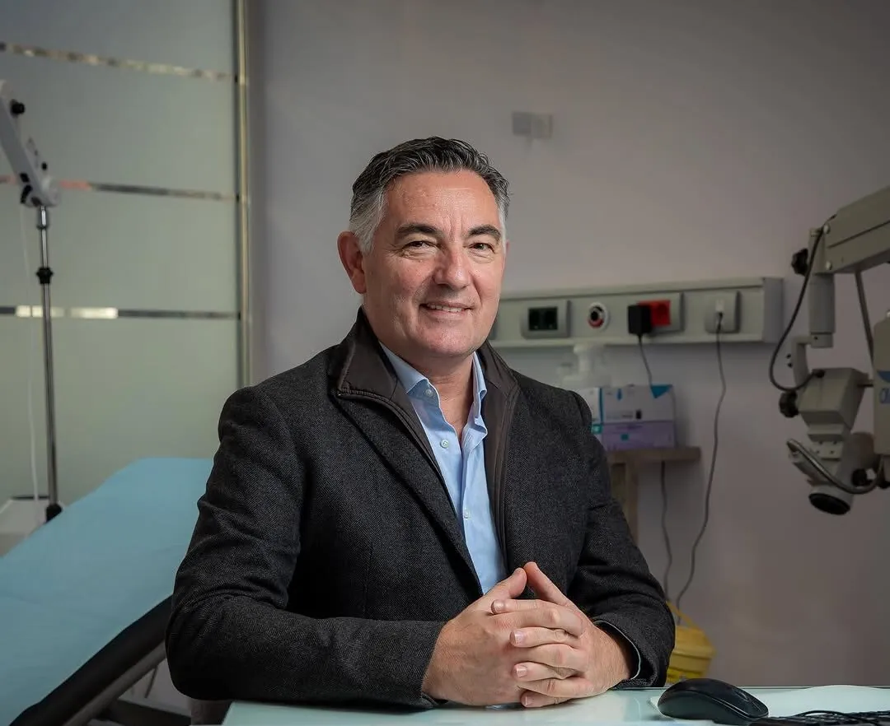
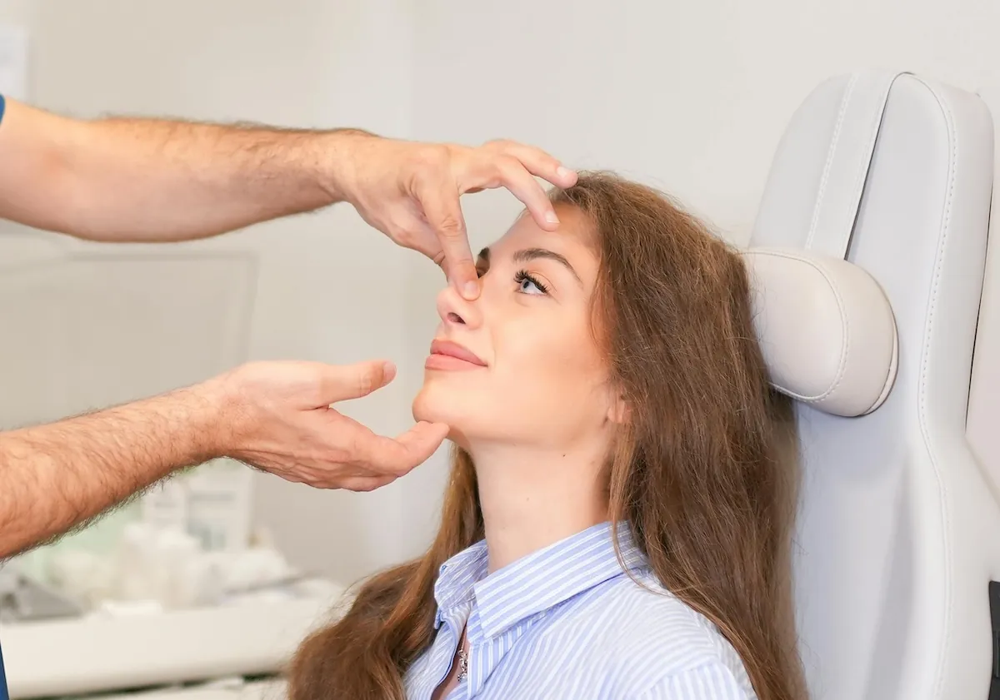
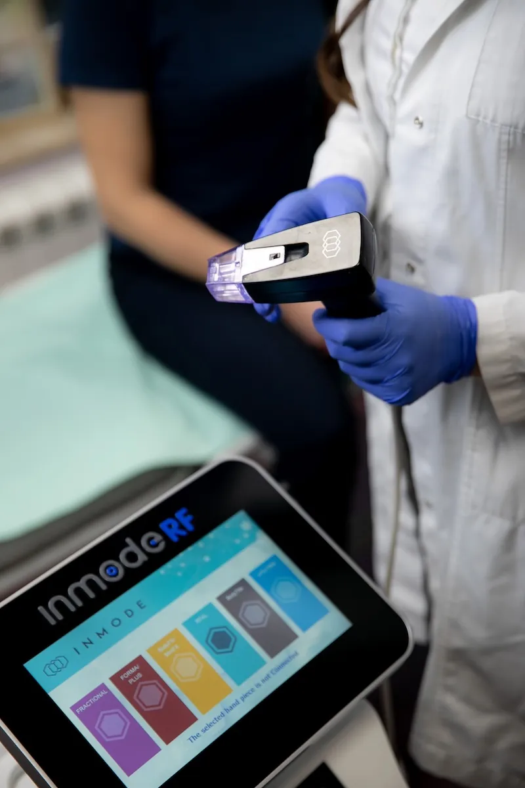
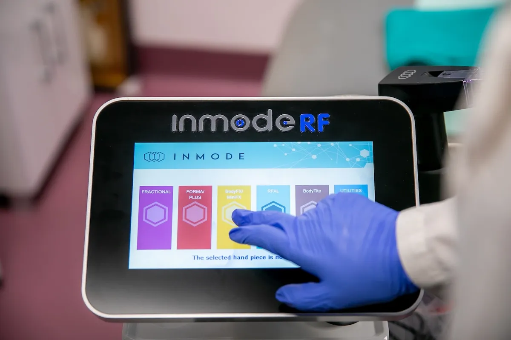
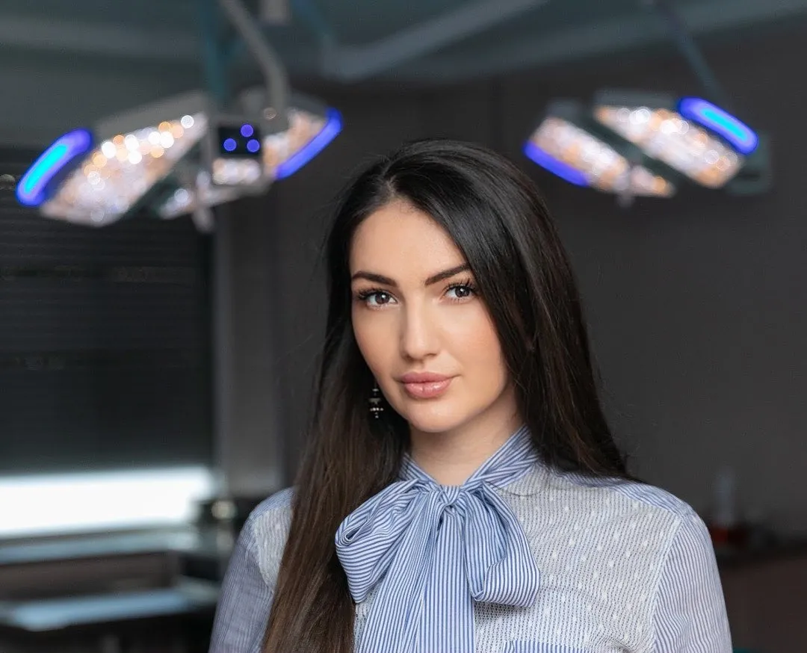
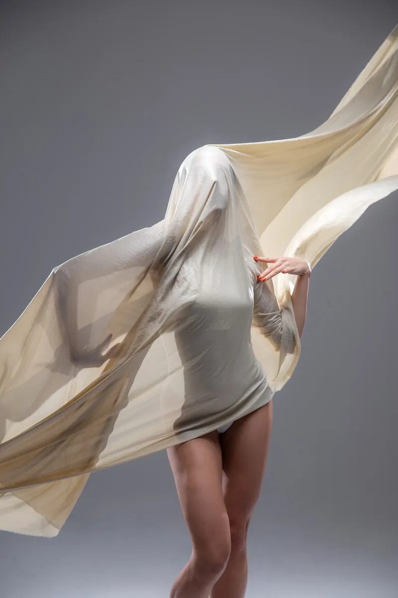
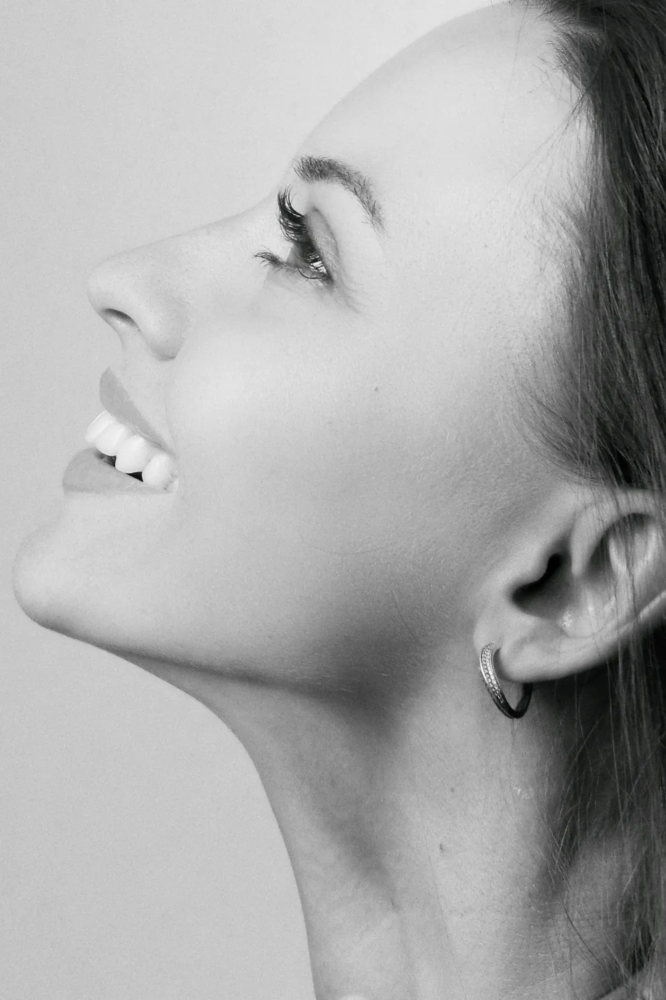

Hospitalizacija kad je potrebna
Posle zatezanja lica: dva dana.Posle zatezanja stomaka: 24 sata.
Hirurški i nehirurški estetski tretmani na jednom mestu.U centru Beograda, sa dvoje specijalista plastične hirurgije.

Dodirnite tačku na licu i pogledajte proceduru

Zahvati koji traže opštu anesteziju i noćenje rade se pod istim krovom.Od prvog razgovora do skidanja konaca, vodi vas isti tim.
Posle zatezanja lica: dva dana.Posle zatezanja stomaka: 24 sata.
Zahvat izvodi specijalistaplastične i estetske hirurgije.
Oblik nosa i disanje rešavamo,kad je potrebno, u jednom aktu.
BodyTite, FaceTite i Morpheus8,sa regionalnim edukatorom u timu.
Redovno pratimo vaš oporavak.Grudnjak dobijate u bolnici.
Nudimo različite opcije plaćanja.Detalje dobijate na konsultacijama.
Izaberite oblast i otvorite zahvat koji vas zanima.Uz svaki piše anestezija, trajanje i oporavak.
Radiofrekventna energija zagreva tkivo ispod kože.Koža se zateže, a masne naslage se tope.
Mikroiglice prodiru u kožu na unapred podešenu dubinu.Kroz mikroskopske kanale ide radiofrekventna energija.
Sonda kroz male rezove zagreva potkožno tkivo.Rastopljene naslage se odmah i usisavaju.
Prvi rezultati se vide posle dve do tri nedelje.Potpun rezultat posle tri do šest meseci.


Jedini regionalni edukator za ove procedure.Bolnica je edukativni centar za InMode.
Izaberite zahvat i pogledajte okviran tok oporavka.Tačan plan za vas dobijate na konsultacijama.
Tim vode dvoje specijalista plastične, estetske i rekonstruktivne hirurgije.Pomažu vam da razumete svaki korak procedure.
Preko 25 godina hirurškog iskustva i autor više od 100 naučnih radova.Redovan predavač na međunarodnim i regionalnim kongresima.
Edukacija i kongresi
Akademska karijera
Članstva

Predavač na kongresima o konturisanju lica i tela.Regionalni edukator za Morpheus8 i BodyTite.
Edukacija
Razgovaramo o vašim željamai zdravstvenom stanju.
Pravimo plan tretmanaprilagođen baš vama.
Zahvat izvodi specijalista plastične,estetske i rekonstruktivne hirurgije.
Posle zahvata redovno pratimovaš oporavak.
Sastavite listu pitanja koja želite da postavite specijalisti.Otvoren razgovor o očekivanjima ključan je za dobar rezultat.
Pomažemo vam da istaknete svoju prirodnu lepotu.Zategnutiji i vitalniji izgled, bez preteranog efekta.
Pogledajte sve procedure

Ne vidite svoje pitanje?Pozovite nas na 011 354 27 85.
Većina zahvata u Bolnici Adonis obavlja se u lokalnoj ili opštoj anesteziji, pa tokom samog zahvata nećete osećati bol. Posle zahvata može doći do nelagodnosti, koja se kontroliše propisanim lekovima protiv bolova. Pre zahvata dobićete uputstva o kontroli bola i nezi tokom oporavka.
Oporavak zavisi od vrste zahvata i od samog pacijenta. Većina pacijenata se normalnim aktivnostima vraća za nekoliko nedelja, a potpuni oporavak i konačan rezultat mogu da traju nekoliko meseci. Okvirne rokove po zahvatu vidite u planeru oporavka iznad, a na konsultacijama će vam hirurg reći šta da očekujete.
Odluka o estetskom ili plastičnom zahvatu je lična. Na konsultacijama hirurg razgovara sa vama o vašim ciljevima, očekivanjima i zdravstvenom stanju i predlaže opcije koje odgovaraju vašim potrebama. Pre odluke treba da znate sve o zahvatu, uključujući moguće rizike.
Izbor pravog plastičnog hirurga ključan je za uspeh operacije. Hirurzi u našoj bolnici imaju odgovarajuće sertifikate i bogato iskustvo, a redovni su učesnici i predavači na svetskim, evropskim i regionalnim kongresima.
Posle operacije povećanja grudi funkcija mlečne žlezde je očuvana, pa buduće majke mogu normalno da doje. Implantat ne otežava dijagnostičke metode kao što su mamografija ili rendgen.
Efekat je vidljiv odmah posle tretmana. Rezultati zavise od tretirane regije i obično traju od 6 meseci do 2 godine. Svakodnevne aktivnosti nastavljate odmah, a nekoliko dana treba izbegavati naporne vežbe, saunu i direktno sunce.
Bolnica Adonis nudi različite opcije plaćanja i finansiranja. Detaljne informacije dobićete na konsultacijama.
Konsultacije možete zakazati telefonom, na 011 354 27 85 ili 062 404 564, ili mejlom na adonisbolnica@gmail.com. Radno vreme je od ponedeljka do petka od 8 do 20h i subotom od 8 do 16h.
Na konsultacijama saznajete sve o zahvatu, uključujući moguće rizike.Odluku donosite tek kad imate sve odgovore.